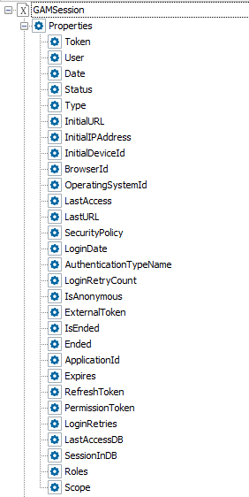

User Session Cache Timeout is a GAM Repository property that allows establishing a time during which the user data associated with a particular session is managed in the server memory (and in the user's web session). As a result, the database is not accessed for this purpose. The information cached is that of the GAMSession object; it belongs to a specific user, so it is stored in the web session.  To increase performance, the time specified in "User Session Cache Timeout" implies that during this period the GAM application does not need to query the database to check the user session. Every time the application queries the database to get information on the user session, the time is reset. So, while the User Session Cache Timeout does not expire, the user information is retrieved from the web session if possible. When the time expires, and the user session is needed, the information is retrieved from the database, and the cache is reloaded. The cache is reset when the user logs out and logs in again. The GAMRepositoryConfiguration web panel (located in GAM Example folder) is an example where this property is used. It is used in the GeneXus code (by using the GAM API) as follows: &Repository.UserSessionCacheTimeout = &UserSessionCacheTimeout ValuesThe time has to be specified in seconds. See Also
|
| Backlinks |
| Allow Multiple Concurrent Web Sessions Security Policy Property |